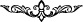

benzeterek değersizleştirmektir. Tâ ki bu duyduklarına kızsın, zoruna gitsin ve kocası da
onunla birlikte kızsın. Çünkü onlar izzet ve şeref sâhibi bir evde, servet ve zenginlik
makâmında bulunuyorlardı.
Mürre el-Hemedânî der ki: Ümmü Cemîl, hergün bir demet demir dikeni getiriyor ve
müslümanların gelip geçtikleri yollara atıyordu. Bir gece o yine böyle diken taşırken
yoruldu ve dinlenmek için bir taşın üzerine oturdu. Bir melek gelerek kendisini
arkasından çekti ve onu ipiyle boğdu. O da ölüp Cehenneme gitti.
Yenbûu’l-hayât isimli eserde şöyle deniliyor: Ümmü Cemîl, Tebbet sûresinin indiğini
duyunca hemen kardeşi Ebû Süfyân’ın evine gitti. Öfkeyle yanıyordu. Kardeşine:
“Yazıklar olsun sana ey cesur adam! Muhammed beni kötülüyor sen oturuyorsun, bu seni
kızdırmıyor mu?” dedi. Ebû Süfyân, “Ben senin öcünü alırım, O’nun hakkından gelirim”
diyerek kılıcını aldı ve evden çıktı. Az sonra hızla geri geldi. Ümmü Cemîl, “Onu
öldürdün mü?” diye sorunca, Ebû Süfyân: “Kardeşinin başının bir ejderhânın ağzında
olması seni sevindirir mi?” dedi. Ümmü Cemîl, “Hayır vallahi!” dedi. Ebû Süfyân: “Az
önce neredeyse bu oluyordu!” dedi. Yâni Ebû Süfyân bir ejderhâyı görmüştü. Eğer
Allah Rasûlü’ne (s.a.) yaklaşmış olsaydı, yılan onun başını yutacaktı. Daha sonra Ebû
Süfyân müslüman olacak, kız kardeşi ise kâfir olarak ölecekti. Her şey Allah Teâlâ’nın
önceden belirlediği hükmüne göre olur.
Keşfü’l-esrâr’da gelmiştir ki; Ashâb-ı Kehf’in köpeğinde küfür rengi vardı, Bel‘âm
Bâûr’un elbisesinin süslemelerinde ise îman görünmekteydi. Ancak ezelî saâdet ve
şakàvet her iki tarafta da gizliydi. Tâlih yüz gösterdiğinde köpeğin küfür rengi taşıyan
sûret postunu Bel‘âm’ın yüzüne örttüler ve “Onun durumu tıpkı köpeğin durumuna
benzer.” (A‘raf, 176) dediler. Bel‘âm’ın din hırkasını ise o köpeğe giydirdiler ve
dediler ki; “Onlar üç kişidir; dördüncüleri de köpekleridir.” (Kehf, 22)
Bu âyetin son kelimesi olan “mesed” kelimesinde durulur, sonra tekbir getirilir. Daha
evvel geçtiği üzere bu vakf, yanlış bir mânâ vehmettirmemek içindir.[259]
[257]. Buhârî, Tefsîr, 111/1, 2; Tirmizî, Tefsîr, 111/1.
[258]. Çünkü bu durumda Ebû Leheb bir yandan Kur’ân’a îmân etmekle bir yandan da
aslâ îmân etmeyeceğine îmân etmekle yükümlü tutulmuş olur ki bu da çelişkidir.
Müfessir bunun için yukarıdaki açıklamayı yapmaktadır. (Çeviren)
[259]. Mesed Sûresi, 10 Cemâziyelevvel 1117/5 Eylül 1705 milâdi tarihinde tamâma
erdi.